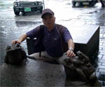
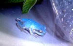
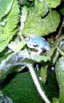
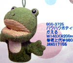
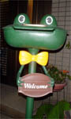
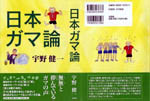

大韓民国にカエル石像！ 【大韓民国発尾張の国名古屋かえる将軍同志記者】予はこのたび、大王殿の筑前の国よりほど近い韓国を行脚したぞよ。かの国の都・ソウルは仁寺洞という街（江戸は浅草のような街じゃ）でまたしてもかえる石像に出おうた。道行く町人に頭ナデナデされてござった。民に愛されるこのかえる、果報者じゃ。皆もご覧じよ！
【全国かえる奉賛会】韓国はカエル天国とも聞いているが、まだ大王は、出会ったことがないのであるうう。いいなー。街頭にカエルがあるなんて、ヨーロッパみたいではないかあああ。
宮城でも青いカエルを発見！ 【宮城発ごま蛙同志記者】実は青いカエルを発見しまして、これはなんだと調べていたら、ここのサイトを見つけました。貴重なカエルだったんですねぇ（＞＜） 幸運のカエルなのですね♪ほんとびっくりしましたよー（＞＜）今、それで普通のアマガエルと一緒に飼っています☆母が庭を青いものが飛んでて、「なんだ！？」と思ったらコイツだったそうです☆【日本発fumiko/kazeの館同志記者】ワンコの散歩に行って、今つかまえてきたの。最初びっくりしたけど とてもかわいいよ。きれいで青空みたいな色だよ。
【全国かえる奉賛会】青いカエルの北限かあ。宮城県での発見例は初めてである。しかし、幸福がむこうから飛び込んでくるとは、すごいではないかああ。きっとラッキー連続の人生が始まったのである。
カエルのバンクを販売！ 【日本発小林同志記者】はじめまして。カエルのバンクのところ読んでメールしてます。サンタンという会社で、そこそこの大きさのカエルのバンクを販売しています。 素材は塩ビですので蹴っても、たたきつけても壊れません。 他にもお風呂のおもちゃ、ストラップなどありましたので探してみてはいかがでしょうか？写真見つけたらまたメールします。 スタンプラリーのカードの写真と、各イベントの公式Ｔシャツをそろえた写真が証拠の品です。それでは、これからもよろしくおねがいします。
【全国かえる奉賛会】すごいぞおお。お風呂グッズが、たくさん売っていました。これでもうカエルだらけの風呂で、仕事もできるし、風呂から一歩もでなくてもいいんだあ。
 カエルポストを発見！【福岡発いずみ様】車からみていると、カエルポストを発見しました。こんなポストなら、どんどん手紙が来そうです。町のポストも全部これになればたのしいですよね。
「日本ガマ論」を刊行！【がま日本発足の長さが四とくれば胴の長さが六となる。胴長短足 四六のガマ（日本男児）様】猛暑の毎日ですが如何お過ごしでしょうか。 � 私はこの７月、アブラ汗、たらりたらりで時間はかかりましたが「日本はガマではないか」の３０数年間の疑問をやっと本にすることができました。「日本ガマ論」です。
 � 純粋無垢なガマの心を持った自分と口八丁手八丁と忙しい仕事マンである香具師の心を持った自分がいろいろな鏡を見て葛藤、交互に語り合う日本文化論です。日本が昭和48年、石油ショックに見舞われた時の慌て振りに日本はあの有名な筑波山、ガマの油売り口上に出てくるガマとそっくりの運命にあるのではと不安に思ったのがことの始まりです。 � 戦後、日本人は新しい欧米と言う海外の鏡を見て、そこに映る自らのみすぼらしさ、貧相な姿にビックリ仰天。とくにアメリカンドリーム、モノの豊かさに驚き、憧れ、追いつき追い越せとアブラ汗、冷や汗を流し必死に頑張り、世界第二位の経済大国にやっとなった。（鏡の部屋のガマ）資源やエネルギーが少ない「無」の国、日本が頭を絞り世界にヒット商品を売りだし「有」を生み出していったような幻想は、実際は「無」から「有」を生むことなんて不可能なこと。 四六版・上製・272頁 定価 1785円（税込み）ISBN4-8355-7676-4� C0095� \1700E
�
下記、目次にあるように松尾芭蕉の蛙、ガマ公園のガマ、尾上縫に捨てられたガマ、茹で蛙などいろいろな蛙が登場します。とはいえ、主人公は筑波山は四六のガマ、暑いタイ国にも出張し、奮戦します。 目次
今や「四六のガマ」の口上はもとより大道芸人のことなど知らない若者が多くなり、こう言った昔の文化、今の日本を築いた日本人の世界に関心 を持って頂ければと熱い想いをいれました。敬具
携帯で携帯＠カエル新聞を吸い取ろう！ 【全国かえる奉賛会】携帯から初めてカエル新聞を見たいというひとにとっては、アドレスを打つのが難儀なものよのう！そこでドコモとボーダフォンの一部機種から、カメラをかざしてコードを読みとるんぢゃああ。なお、このQRコードを眺めていたらカエルやらオタマジャクシやらが浮かび上がってくるらしいぞおお。ほんとかああ。
【全国かえる奉賛会】携帯から初めてカエル新聞を見たいというひとにとっては、アドレスを打つのが難儀なものよのう！そこでドコモとボーダフォンの一部機種から、カメラをかざしてコードを読みとるんぢゃああ。なお、このQRコードを眺めていたらカエルやらオタマジャクシやらが浮かび上がってくるらしいぞおお。ほんとかああ。
|
メールマガジン登録
メールマガジン解除
Powered by


かえる古新聞過去に取り上げた記事を見出し付きで一覧したい人は、ここをクリック◆創刊号を見る◆先週号を見る◆話題の号を見る◆かえる新聞の昔を読む
|
私も入っています。。全国かえる奉賛会
大王様に会うには、このバナーをクリック。ずっと奥に写真館があるぞ。全国かえる奉賛会に入会するには、自分のホームページのどこかに、下の部分を追加するとバナーがリンク付きで表示されるぞ。どんどん入会しましょー |


|